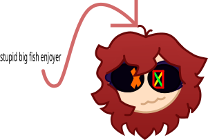
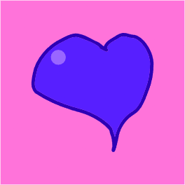

this is a HEAVY work in progress website! I have many more things i wish to add, though it might take a while to do so.
most of the characters here are women!1!! if you hate
or smth fuck off.
also, many of my characters are a AU (alternate universe) of PRESSURE. which is a game i LOVE ♥♥. i no longer want to affiliate my characters with this game

(press the "X" at the top right to go back)

Maris-website-HELP.txt X